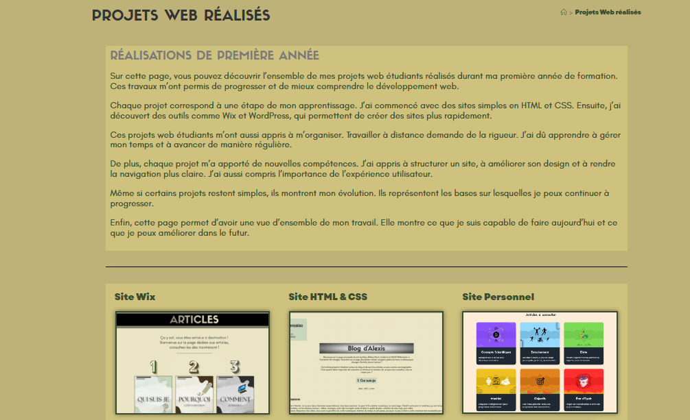

Site WordPress
Site WordPress
Ce site WordPress fut le deuxième CMS que j'ai utilisé lors de ma formation. Après avoir découvert Wix, j'ai pu travailler avec un outil qui demande un peu plus de temps pour être pris en main, mais qui offre davantage de possibilités en matière de personnalisation et de fonctionnalités. WordPress permet notamment de gérer plus précisément l'apparence et l'organisation d'un site grâce aux thèmes, aux extensions et aux différents outils disponibles. Cette réalisation m'a donc permis de découvrir une autre manière de concevoir un site web, avec un fonctionnement différent de celui que j'avais rencontré sur Wix.

L'objectif de ce projet était de réaliser un portfolio présentant mon profil et les travaux effectués durant ma première année de formation. Il m'a permis de mettre en pratique les connaissances acquises, tout en travaillant sur la présentation de mes réalisations et l'organisation des différentes pages. J'ai également découvert plusieurs fonctionnalités de WordPress, notamment le commerce en ligne avec l'extension WooCommerce, qui permet de mettre en place une boutique et de gérer des produits. J'ai aussi pu m'initier à la création de thèmes WordPress en réalisant un thème enfant. Celui-ci permet de personnaliser un thème existant sans modifier directement les fichiers du thème parent. Enfin, j'ai utilisé Elementor, un constructeur de pages qui permet de créer et de modifier visuellement les différentes parties d'un site, sans devoir écrire tout le code soi-même. Ce projet m'a ainsi permis de découvrir plusieurs outils importants de WordPress et de mieux comprendre les possibilités offertes par ce CMS.